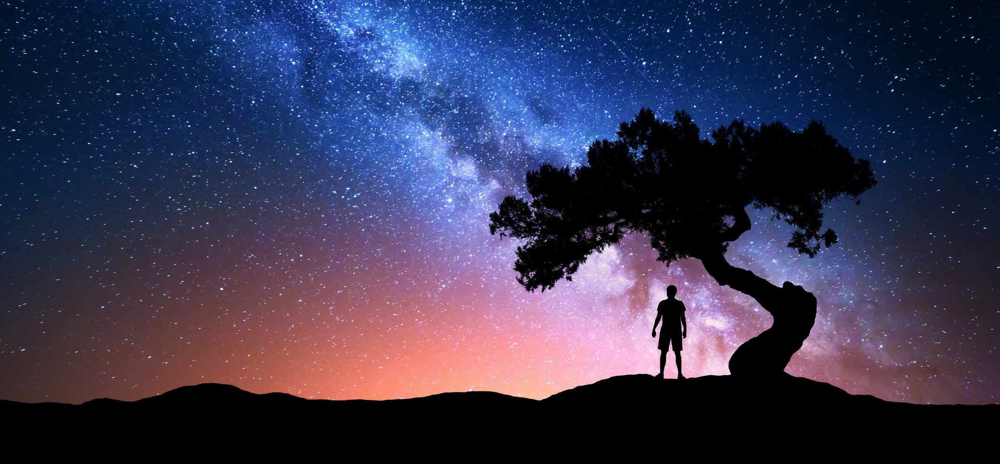
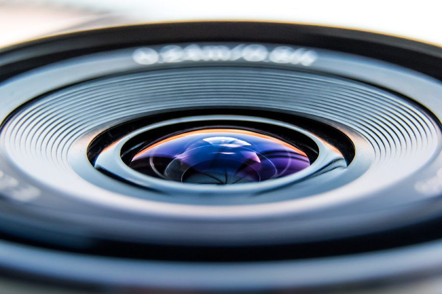
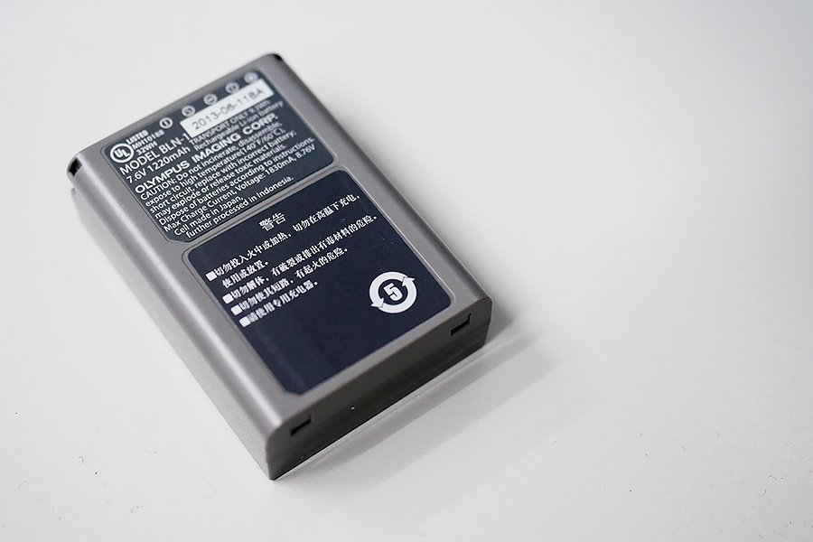
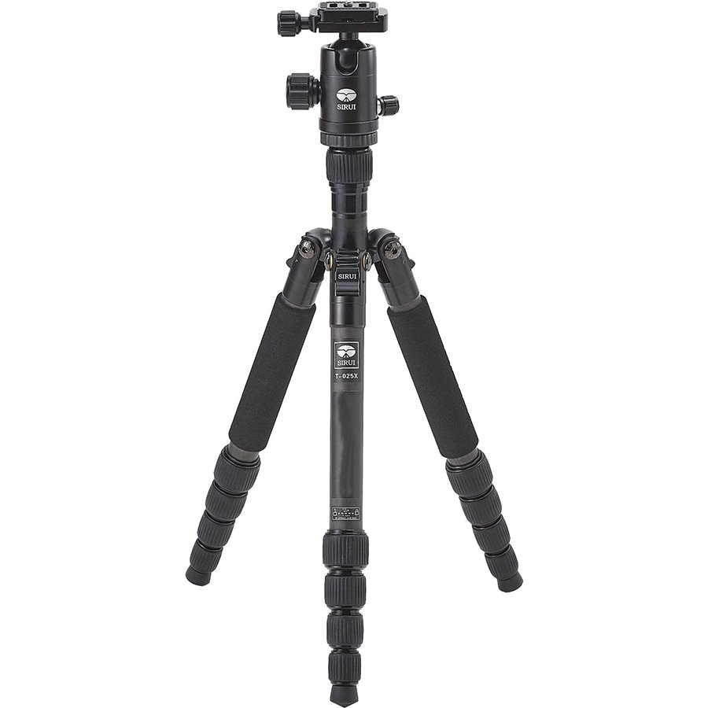
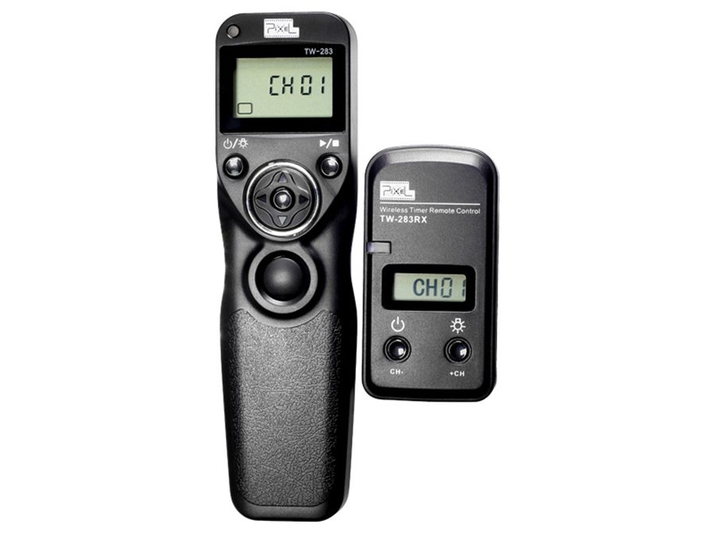
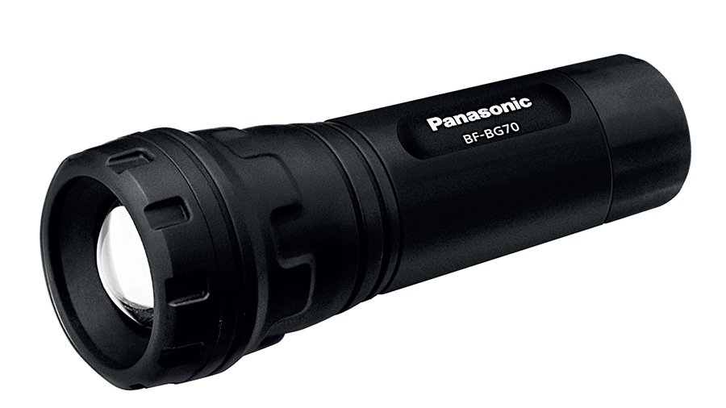
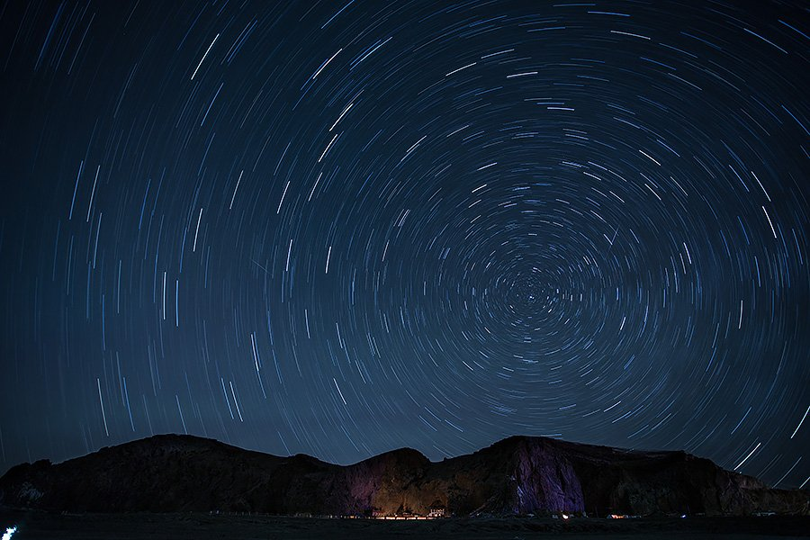
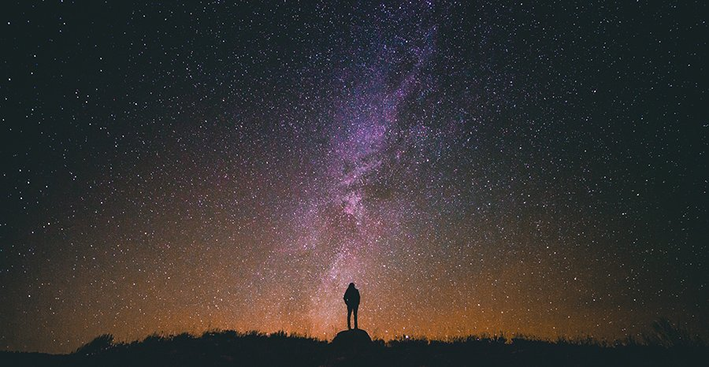

22 Oct 2019
Author : Nathachai
ในช่วงหลายปีที่ผ่านมากระแสการถ่ายดาวนั้นนิยมมากขึ้นอย่างเห็นได้ชัดครับ ในกลุ่มโซเชียลหลายกลุ่มก็มีการโพสภาพถ่ายดาวมาอย่างต่อเนื่อง สวย ๆ ทั้งนั้น การถ่ายดาวสำหรับมือใหม่หลาย ๆ คนอาจฟังดูเป็นเรื่องยากและเกินความสามารถจนล้มเลิกกันไปก็มี แต่จริง ๆ แล้วการถ่ายดาวนั้นไม่ได้ยากเกินไปอย่างที่คิดครับ เพียงแต่ก่อนการถ่ายก็จำเป็นจะต้องวางแผนเยอะหน่อย และต้องใช้ความพยายามที่มากกว่าการถ่ายวิวแบบอื่นๆเท่านั้นเองครับ แต่บอกเลยว่าผลลัพท์ที่ได้ฟินมาก ๆ ครับ วันนี้ผมจะมาแนะนำเทคนิคการถ่ายดาวแบบฉบับมือใหม่หัดถ่ายดาว และจะพยายามอธิบายให้เป็นภาษาที่เข้าใจง่าย ๆ เป็นข้อ ๆ นะครับ
1.ดาวจะถ่ายติดมาเยอะหรือเห็นมากในวันที่ท้องฟ้าปลอดโปร่ง ไม่มีหมอกควันและเมฆมาบัง เพราะฉะนั้นแนะนำเป็นที่สูงหน่อยจะดีมากครับ
2.ยิ่งมืดยิ่งเห็นดาว เพราะฉะนั้นสถานที่ที่เราจะถ่ายควรจะไม่มีแสงไฟจากเมืองมารบกวนเยอะจนเกินไปครับ เคยสงสัยมั้ยครับว่าทำไมถ่ายดาวในเมืองถึงไม่เห็นดาว เหตุผลก็ตามนี้ครับ นอกจากที่ในเมืองจะมีแสงรบกวนเยอะแล้ว มลภาวะทางอากาศก็บดบังดาวน้อย ๆ ของเราเช่นกันครับ
3.ควรเป็นคืนเดือนมืดที่แสงของพระจันทร์น้อยๆหรือวันที่พระจันทร์ขึ้นกลางวันยิ่งดี ฟังไม่ผิดหรอกครับ พระจันทร์ขึ้นพร้อมพระอาทิตย์และตกพร้อมพระอาทิตย์ก็ยังมี ถ้าไม่ใช่คืนเดือนมืด แสงสว่างจากพระจันทร์จะทำให้ฟ้าสว่างเกินไป และบดบังดวงดาวของเรา เราจะถ่ายดาวไม่ค่อยติดครับผม
4.ถ้าต้องการถ่ายทางช้างเผือก ควรเชคเวลา เชคทิศทางของสถานที่ที่จะไปว่าทางช้างเผือกขึ้นพ้นเส้นขอบฟ้าเวลาไหน และวางตัวอยู่แนวไหนด้วยจะได้ไม่พลาดครับ
ซึ่งทั้งหมดที่กล่าวมาก็สามารถเชคได้จากแอพพลิเคชั่นทั้งหลายผ่านสมาร์ทโฟน ซึ่งที่ผมแนะนำก็ Starchart , startracker ซึ่งสามารถแพลนเชควันที่ เวลา ในวันที่เราจะไปล่วงหน้าได้ว่าทางช้างเผือกขึ้นตอนไหน วางตัวทิศทางไหนครับผม
ถ้าจะถ่ายรูปแล้วไม่มีกล้องก็ยังไง ๆ อยู่ แต่แนะนำเป็นกล้องที่สามารถเปลี่ยนเลนส์ได้ และเซ็นเซอร์ใหญ่หน่อยเช่น M4/3 APSC Fullframe ถ้าเซ็นเซอร์เล็ก ๆ แบบในกล้องคอมแพคก็อาจจะเก็บรายละเอียดมาได้ไม่ดีเท่า นอกจากนั้นยังมีผลเรื่อง Noise ที่ ISO สูง ๆ เซ็นเซอร์ที่ใหญ่กว่าก็ได้เปรียบมากกว่าด้วยนั่นเองครับ
แนะนำเป็นเลนส์ไวด์ ถ้าเป็นเลนส์ที่มีรูรับแสงยิ่งกว้างก็ยิ่งดีครับซึ่งเลนส์ที่มีรูรับแสงกว้าง ๆ ก็มักจะเป็นเลนส์ฟิก ถามว่าเลนส์คิทติดมากับกล้องสามารถถ่ายดาวได้หรือไม่? ก็ต้องตอบว่าได้ครับ แต่อาจจะได้ดาวมาไม่ค่อยเยอะ เลนส์ยิ่งรูรับแสงยิ่งกว้างก็จะถ่ายติดดาวมามากกว่า และด้วยความที่รูรับแสงไม่กว้างมากแสงเข้าน้อยกว่าอย่างเลนส์คิทอาจจะต้องเสียสปีดชัตเตอร์ที่ต้องเปิดนานกว่าอาจจะต้องดัน ISO สูง ๆช่วย ทำให้ก็จะมี Noise เพิ่มเข้ามาด้วยเช่นกันครับผม
ด้วยความที่การถ่ายดาว เราอาจจะต้องใช้สปีดชัตเตอร์นานหน่อย แถมอาจจะต้องถ่ายหลาย ๆ ภาพ ซึ่ีงแน่นอนว่าอาจจะใช้เวลานานพอสมควร บางครั้งแบตก้อนเดียวที่เตรียมไปก็อาจจะไม่พอ ยิ่งเป็นกล้อง Mirrorless ก็อาจจะจำเป็นต้องมีแบตเสริมครับผม
ขาตั้งกล้องนี่คืออุปกรณ์สำคัญสำหรับการถ่ายดาวหรือการถ่ายสปีดช้า ๆ เลยครับ เพราะเราไม่สามารถถือถ่ายได้ด้วยมือเปล่าอยุู่แล้ว ถ้าไม่มีก็แนะนำให้ซื้อครับ ซื้อดี ๆ หน่อยเพราะขาตั้งกล้องนี่ซื้อทีเดียวแล้วใช้กันยาว ๆหลายปี
นอกเหนือจากความนิ่งที่ได้ สำหรับกล้อง DSLR นั้นค่อนข้างจำเป็นสำหรับการถ่ายดาวหมุน แนะนำสายลั่นแบบตั้งไทม์แลปส์ได้จะดีมาก ๆ เพราะการถ่ายแบบดาวหมุนอาจจะต้องถ่ายหลายภาพ และ อาจใช้เวลานาน การมีสายลั่นแบบตั้งเวลาได้ เราก็จะทำอย่างอื่นรอได้ไม่ต้องมารอกดเอง ไปนอนยังได้ ฮ่า ๆ สำหรับ Mirrorless หรือ DSLR บางรุ่น ถ้ามีฟังก์ชั่นไทม์แลปส์ในตัวกล้องก็สบายครับ ใช้แทนกันได้เลย
เป็นอีกหนึ่งอุปกรณ์จำเป็นเลยก็ว่าได้ เพราะส่วนใหญ่สถานที่ ๆ เราจะถ่ายก็จะมืด ๆ แล้วการหยิบจับ กดปุ่มต่าง ๆ ก็อาจจะไม่สะดวกหรือมองไม่เห็นก็จำเป็นต้องใช้ไฟฉาย ที่สำคัญเอามาเป็นพรอพสร้างลำแสงในภาพได้ด้วยนะ
เหตุผลที่หัวข้อเป็นแบบนี้เพราะว่าเทคนิคการถ่ายดาวนั้นก็มีอยู่หลายแบบซึ่งวิธีในการเซ็ตติ้งการถ่ายแต่ละแบบก็ต่างกันนิดหน่อยครับ ซึ่งหลักๆที่เห็นถ่ายกันก็มีอยู่ 3 คือ การถ่ายดาวหมุน (Star trail) และ การถ่ายทางช้างเผือก (Milky Way) สุดท้ายเป็นการถ่ายแบบ deep sky objects ถ่ายเนบิวล่า ถ่ายกาแลคซี่อื่น ๆ อะไรประมาณนั้น ซึ่งในบทความนี้ผมขอพูดถึงสองหัวข้อแรกแล้วกันนะครับ เพราะการถ่ายแบบ deep sky objects นั้นอุปกรณ์หรือความรู้ในการถ่ายต้องมีสูงมากขึ้นอาจจะไกลตัวไปสำหรับผู้เริ่มต้น อีกอย่างผมเองก็ไม่เคยถ่าย ฮ่า ๆ
การถ่ายดาวแบบให้มีหางลากยาว ๆ แบบนี้หัวใจหลักคือการใช้สปีดชัตเตอร์ให้นาน ๆ หน่อยขึ้นอยู่กับว่าสภาพแสงเป็นไงมีฉากหน้ามั้ย ปกติก็อาจจะใช้สปีดชัตเตอร์เป็น1-2 นาทีก็ได้ ถ่ายมาให้ได้ราว ๆ 20 ภาพขึ้นไป ยิ่งถ่ายเยอะดาวยิ่งลากยาว แล้วเอามารวมกันในโปรแกรมอย่าง Photoshop หรือโปรแกรมฟรีอย่าง Star Trail หรือ Starstax ส่วนค่ารูรับแสงส่วนใหญ่จะเปิดกว้างสุดเท่าที่ทำได้ครับ เพราะยิ่งเปิดกว้างดาวจะติดมาเยอะขึ้นครับ แล้วใช้ ISO ในการปรับเพื่อให้ภาพสว่างหรือมืดลงอีก ให้ทดสอบถ่ายมาสักรูปก่อน ถ้ารู้สึกว่ายังมืดไปก็สามารถเพิ่ม ISO หรือลด ISO เอาครับ แต่ก็อย่าลืมว่ายิ่ง ISO สูง Noise ก็จะตามมา ปกติการถ่ายแบบดาวยืด ๆ แบบนี้จะมีอยู่สองแบบคือถ่ายแบบไม่ได้สนใจดาวเหนือ กับอีกแบบก็คือให้มีดาวเหนือเป็นจุดศูนย์กลางก็จะทำให้หมุนเป็นวงกลม ๆ แบบภาพด้านบน ซึ่งวิธีการหาดาวเหนือก็ไม่ยากครับ ก็อยู่ทางทิศเหนือนั่นแหละเราก็ตั้งกล้องไปทางทิศเหนือโดยที่ดาวเหนือจะสูงเหนือขอบฟ้าไม่มากหากเราตั้งกล้องไปทางทิศเหนือแล้วเก็บมากว้าง ๆ ก็สามารถที่จะเก็บดาวหมุนมาแบบมีจุดศูนย์กลางแบบนี้ครับ
การถ่ายดาวเป็นจุด ๆ แบบนี้ส่วนใหญ่ก็นิยมถ่ายกับทางช้างเผือกครับ กรือจะถ่ายแบบไม่มีทางช้างเผือกก็ได้ไม่ว่ากัน การถ่ายภาพแนวนี้หัวใจหลักก็อยู่ที่สปีดอีกแล้ว ถ้าเราใช้สปีดที่ยาวไปก็จะทำให้ดาวเราเป็นเส้นนั่นหมายความว่าทางช้างเผือกเราก็จะไม่ชัดครับยืดออกไปครับ แล้วเราจะรู้ได้ยังไงล่ะว่าสปีดเท่าไหร่ถึงจะเป็นค่าที่เราถ่ายแล้วดาวไม่หมุน คำตอบก็คือเค้ามีสูตรอยู่ครับโดยที่สูตรก็คือ
M4/3 : 300 หารด้วยทางยาวโฟกัสเลนส์ = ระยะเวลาการถ่าย/Shutter Speed
APSC : 400 หารด้วยทางยาวโฟกัสเลนส์ = ระยะเวลาการถ่าย/Shutter Speed
Full Frame: 600 หารด้วยทางยาวโฟกัสเลนส์ = ระยะเวลาการถ่าย/Shutter Speed
การจะโฟกัสดาว หรือ ฉากหน้า ระบบออโต้โฟกัสในที่มืดมาก ๆ นี่แทบจะลืมไปได้เลยครับ ถ้าจะรอให้โฟกัสหาเจอซึ่งไม่รู้ว่าเข้าหรือไม่เข้าอีก แนะนำให้ใช้แมนนวลโฟกัสจะง่ายกว่าและเร็วกว่าเยอะครับ แต่ในกรณีที่เรามีไฟฉายดวงโต ๆ ก็สามารถใช้ในการส่องเพื่อช่วยออโต้โฟกัสฉากหน้าก็ได้อยู่ครับ หรืออีกกรณีก็สามารถโฟกัสไปที่ไฟบ้านเรือนที่อยู่ไกล ๆ หน่อยเพื่อหาระยะ hyperfocal แบบบ้าน ๆ เมื่อโฟกัสเสร็จก็เปลี่ยนเป็นแมนนวลโฟกัส แล้วหันกลับมาจัดองค์ประกอบใหม่เพื่อถ่ายก็จะเป็นวิธีแก้ปัญหาสำหรับมือใหม่ได้ครับ